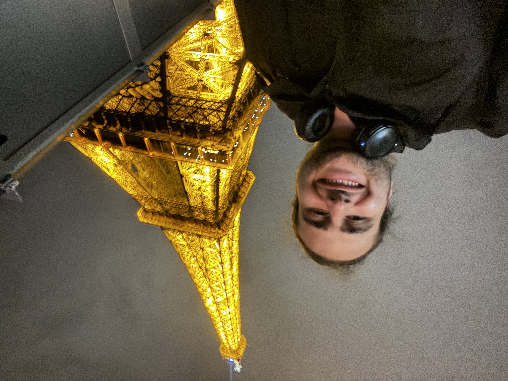
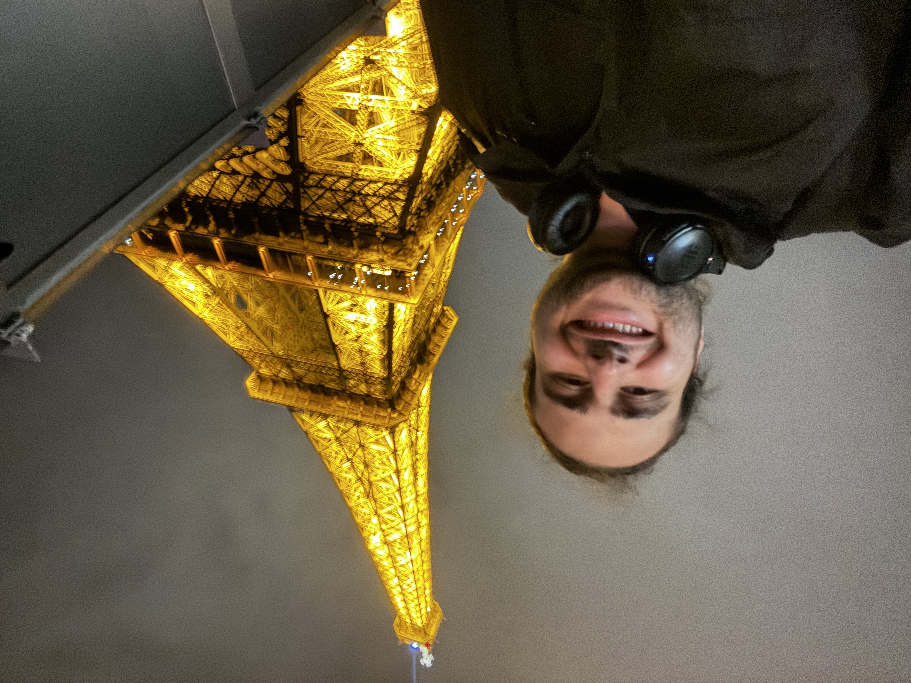

A Single Image Is All You Need: Zero-Shot Anomaly Localization Without Training Data
arXiv preprint · New

Atlanta, Georgia, USA
Mehrdad Moradi is a fourth-year PhD student in Machine Learning at the Industrial and Systems Engineering Depart- ment of Georgia Tech. He holds a Master’s degree in Computer Science with a specialization in machine learning. He has extensive expertise in generative models, with his PhD research centered on their intersection with statistics. His work focuses on applications in computer vision, particularly image-based anomaly detection. His developed method- ologies have been applied to additive manufacturing characterization (Politecnico di Milano), PV panel smoke/fire detection (U.S. Department of Energy), and battery analytics (Ford Motor Company).
 



ISyE, Georgia Institute of Technology · 2022 – 2027
Georgia Institute of Technology · 2022 – 2025
Sharif University of Technology · 2017 – 2022
arXiv preprint · New

ICCV VISION 2025 · Oral

Presented my work in the “Advanced Data-Driven Insights for Complex Industrial Processes” session at INFORMS.

Presented my work in the “Advancements in spatial-temporal analytics” session at INFORMS.